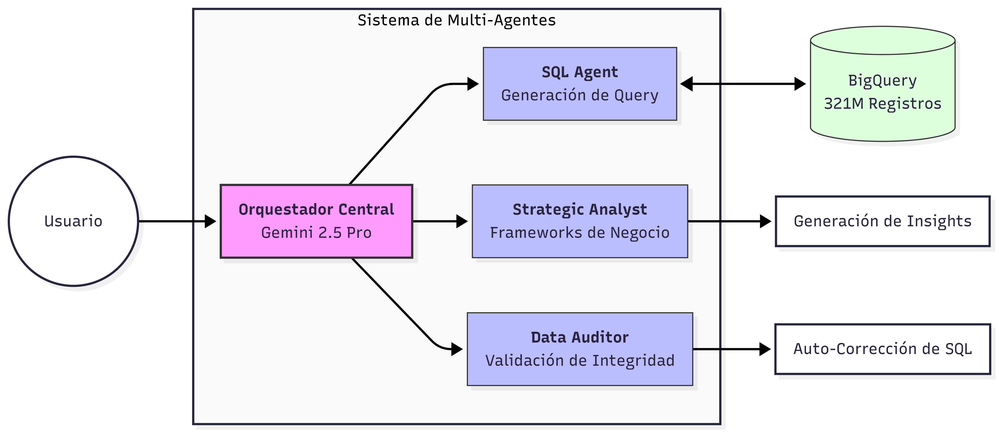

Como Head of BI, mi visión fue transformar la interacción con los datos. No se trata de un chatbot; es un ecosistema coordinado de agentes especializados diseñados para escalar la capacidad analítica de la organización.
SQL Engineering Agent
Traduce intenciones de negocio en queries complejos de BigQuery, integrando el 100% de las reglas financieras origen.
Strategic Analyst
Aplica frameworks de negocio (Pareto, BCG, Elasticidad) para convertir datos crudos en estrategias accionables.
Data Auditor
Garantiza la integridad de las cifras mediante validas cruzadas automáticas antes de presentar resultados al ejecutivo.
Modular Orchestration Flow

Flujo de trabajo multi-capa: Desde el Lenguaje Natural hasta la paridad financiera absoluta.
Valor Estratégico & ROI
El agente automatiza análisis que anteriormente requerían días de trabajo de un equipo de analistas senior.
Elasticidad de Precios
Simulaciones en segundos sobre el impacto de cambios de precio en la demanda histórica.
Insights de Rentabilidad
Identificación instantánea de fugas de margen por cluster, tienda o categoría de producto.
Estrategia Promocional
Optimización del diseño de campañas basado en el performance de datos históricos masivos.
Business Interface